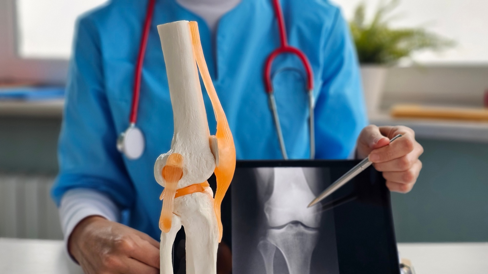

▶ Video
▶ Video
Hernia Discal / Lumbociática
Dolor lumbar, señales de alarma, postura y orientación funcional para avanzar con más seguridad.
Leer más sobre dolor lumbar y ciática Ver videoContenido breve para resolver dudas frecuentes y acompañar mejor el proceso de recuperación.
▶ Video
Dolor lumbar, señales de alarma, postura y orientación funcional para avanzar con más seguridad.
Leer más sobre dolor lumbar y ciática Ver video ▶ Video
▶ Video
Diagnóstico, prevención de fracturas y cuidado funcional con ejercicio, movimiento y seguimiento oportuno.
Ver video ▶ Video
▶ Video
Artrosis de rodilla, dolor, desgaste y abordaje con ejercicio terapéutico y protección articular.
Ver videoMaterial práctico para consultar en casa y reforzar recomendaciones médicas y de autocuidado.

DescargableGuía sobre artrosis de rodilla, diagnóstico, cuidado articular y opciones de tratamiento.
Abrir PDFCuidado articular y recomendaciones prácticas para síndrome del túnel carpiano y actividades cotidianas.
Abrir PDFMensajes clave para actuar a tiempo, entender mejor la funcionalidad y saber cuándo buscar valoración.
La atención en Medicina de Rehabilitación no se limita a diagnosticar y tratar una enfermedad o lesión. Busca comprender cómo esa condición afecta la movilidad e independencia en las actividades de la vida diaria y la participación de cada persona en su entorno familiar, escolar, laboral y social, para dirigir la recuperación, adaptación o rehabilitación, con asesoría para favorecer la inclusión social y laboral según cada caso.
Cuando hay dolor persistente, limitación funcional, dificultad para caminar, secuelas de una lesión, hospitalización prolongada o estancia en unidad de cuidados intensivos, antes y/o después de cirugías ortopédicas, o dudas sobre recuperación y siguientes pasos.
Pérdida de fuerza, caídas, empeoramiento progresivo, dolor intenso o cambios neurológicos requieren valoración médica. En niñas y niños, si aún no se sienta o camina según su edad, si pierde fuerza o presenta caídas frecuentes sin causa aparente, también conviene una revisión oportuna.